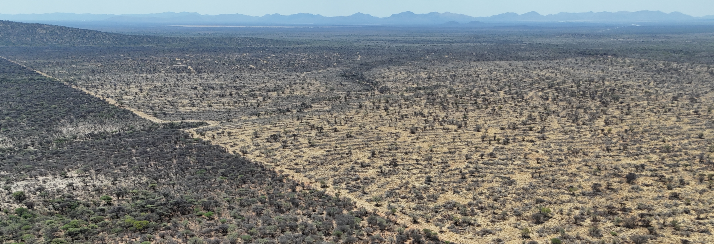

<div class="home-banner">
  
  <div class="home-banner-overlay"></div>
  <div class="home-banner-profile">
    
    <div class="home-banner-name">
      <div class="home-banner-title">Lasse Harkort</div>
      <div class="home-banner-affiliation">PhD Candidate — Geography Institute, Humboldt University Berlin</div>
      <a href="mailto:lasse.harkort@geo.hu-berlin.de">lasse.harkort@geo.hu-berlin.de</a>
    </div>
    <div class="home-banner-socials">
      <a href="https://github.com/Harkorla" target="_blank" rel="noopener" aria-label="GitHub">
        <svg viewBox="0 0 16 16" fill="currentColor" aria-hidden="true"><path d="M8 0C3.58 0 0 3.58 0 8c0 3.54 2.29 6.53 5.47 7.59.4.07.55-.17.55-.38 0-.19-.01-.82-.01-1.49-2.01.37-2.53-.49-2.69-.94-.09-.23-.48-.94-.82-1.13-.28-.15-.68-.52-.01-.53.63-.01 1.08.58 1.23.82.72 1.21 1.87.87 2.33.66.07-.52.28-.87.51-1.07-1.78-.2-3.64-.89-3.64-3.95 0-.87.31-1.59.82-2.15-.08-.2-.36-1.02.08-2.12 0 0 .67-.21 2.2.82.64-.18 1.32-.27 2-.27.68 0 1.36.09 2 .27 1.53-1.04 2.2-.82 2.2-.82.44 1.1.16 1.92.08 2.12.51.56.82 1.27.82 2.15 0 3.07-1.87 3.75-3.65 3.95.29.25.54.73.54 1.48 0 1.07-.01 1.93-.01 2.2 0 .21.15.46.55.38A8.01 8.01 0 0 0 16 8c0-4.42-3.58-8-8-8z"/></svg>
      </a>
      <a href="https://linkedin.com/in/lasse-harkort" target="_blank" rel="noopener" aria-label="LinkedIn">
        <svg viewBox="0 0 24 24" fill="currentColor" aria-hidden="true"><path d="M20.45 20.45h-3.56v-5.57c0-1.33-.02-3.04-1.85-3.04-1.85 0-2.14 1.45-2.14 2.94v5.67H9.34V9h3.42v1.56h.05c.48-.9 1.64-1.85 3.37-1.85 3.6 0 4.27 2.37 4.27 5.45v6.29zM5.34 7.43a2.07 2.07 0 1 1 0-4.14 2.07 2.07 0 0 1 0 4.14zM7.12 20.45H3.56V9h3.56v11.45z"/></svg>
      </a>
      <a href="https://scholar.google.com/citations?user=SgrcWCkAAAAJ&hl=de" target="_blank" rel="noopener" aria-label="Google Scholar">
        <svg viewBox="0 0 24 24" fill="currentColor" aria-hidden="true"><path d="M12 3 1 9l4 2.18v6L12 21l7-3.82v-6l2-1.09V17h2V9L12 3zm6.11 6L12 12.72 5.89 9 12 5.28 18.11 9zM17 15.99l-5 2.73-5-2.73v-3.72l5 2.73 5-2.73v3.72z"/></svg>
      </a>
      <a href="https://orcid.org/0000-0002-2194-8509" target="_blank" rel="noopener" aria-label="ORCID">
        <svg viewBox="0 0 24 24" aria-hidden="true"><circle cx="12" cy="12" r="10.6" fill="none" stroke="currentColor" stroke-width="1.6"/><text x="12" y="16" text-anchor="middle" font-size="10" font-weight="700" fill="currentColor" font-family="Arial, sans-serif">iD</text></svg>
      </a>
      <a href="https://www.researchgate.net/profile/Lasse-Harkort" target="_blank" rel="noopener" aria-label="ResearchGate">
        <svg viewBox="0 0 24 24" aria-hidden="true"><rect x="1.7" y="1.7" width="20.6" height="20.6" rx="3" fill="none" stroke="currentColor" stroke-width="1.6"/><text x="12" y="15.5" text-anchor="middle" font-size="9" font-weight="700" fill="currentColor" font-family="Arial, sans-serif">RG</text></svg>
      </a>
      <a href="https://bsky.app/profile/lasseharkort.bsky.social" target="_blank" rel="noopener" aria-label="Bluesky">
        <svg viewBox="0 0 24 24" fill="currentColor" aria-hidden="true"><path d="M5.202 2.857C7.954 4.922 10.913 9.11 12 11.358c1.087-2.247 4.046-6.436 6.798-8.501C20.783 1.366 24 .213 24 3.883c0 .732-.42 6.156-.667 7.037-.856 3.061-3.978 3.842-6.755 3.37 4.854.826 6.089 3.562 3.422 6.299-5.065 5.196-7.28-1.304-7.847-2.97-.104-.305-.152-.448-.153-.327 0-.121-.05.022-.153.327-.568 1.666-2.782 8.166-7.847 2.97-2.667-2.737-1.432-5.473 3.422-6.3-2.777.473-5.899-.308-6.755-3.369C.42 10.04 0 4.615 0 3.883c0-3.67 3.217-2.517 5.202-1.026"/></svg>
      </a>
    </div>
  </div>
</div>
